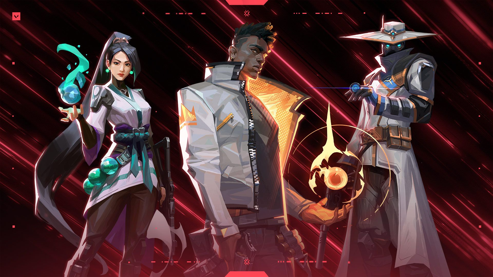

Los videojuegos en nuestra cultura y el impacto que han tenido
Impacto cultural
Los videojuegos han influido mucho en la cultura de hoy en día, y se han vuelto algo tradicional y normalizado en la sociedad. Pero no hace mucho tiempo, sobre las décadas de los 70 y 80, los videojuegos eran algo de ocio y entretenimiento donde poca gente los jugaba. A comparación de hoy en día, los videojuegos se han convertido en una fuente de inspiración para películas, merchandising, música, libros, etc... como por ejemplo la franquicia de: "Mario Bros" de Nintendo, o competiciones, eventos, torneos, etc... como los ESPORTS, donde equipos profesionales, conformados por jugadores de un videojuego, compiten entre otros equipos o en solitario para ver quién es el mejor del mundo, como la Champions de Valorant o la Champions de Counter-Strike.
Mario Bros

Los géneros más populares
RPG
Undertale es un videojuego desarrollado en 2015 por Toby Fox, en el cual su enfoque principal es el RPG, que significa Role-Playing Game. Tiene enfoques como el sistema de combate que es Bullet Hell, haciendo que para el jugador sea el sistema de combate más difícil, creando patrones de ataques de los enemigos o jefes con variaciones o diferentes ataques, como el modo de alma azul, que usan Sans y Papyrus, haciendo que el jugador tenga gravedad, pudiendo variarlo durante todas las direcciones. En el juego también puede llegar a tener tres finales distintos y, a partir de cada final, puede llegar a tener mini variaciones. Estos son:
- Neutral: es la ruta default del juego, que consiste en no ser un genocida ni pacifista. No matar a todos los monstruos vivientes ni dejarlos a todos vivos en el subsuelo, el sitio donde se desarrolla la historia del juego, enfrentándote al final Photoshop Flowey.
- Genocida: esta es la más difícil debido a los dos únicos jefes contra los que te enfrentarás, donde tienes que matar a todos los monstruos y enemigos del juego, enfrentándote a Undyne y contra el personaje más famoso del juego, Sans, con la canción más famosa, Megalovania.
- Pacifista: en esta no tendrás que matar a ningún enemigo del juego, dejando en paz a todos los monstruos y enfrentándote al personaje más poderoso en la historia del juego, Asriel Dreemurr, y al final teniendo un final feliz.
Undertale

Sans
FPS
Los FPS son las siglas de First-Person Shooters, que se caracterizan por ser videojuegos de formato multijugador en primera persona como el Valorant de la empresa Riot y CS2/Counter-Strike 2 de la empresa Valve. Este tipo de juegos permiten a los jugadores competir en un ambiente competitivo, con un equipo conformado por cinco personas, que se basan en la estrategia y comunicación.
Counter-Strike 2

AK-47

Valorant

Jett
Nuevos en este mundo
Consejos
Juega al género que te apetezca jugar, tanto RPG como Undertale, de FPS como Call of Duty, de aventura como Uncharted, más tranquilos como Minecraft, dependiendo de la modalidad o estilo de juego que quieras jugar. O un juego de granjas y automatización como Stardew Valley. Juega a lo que te apetezca, y si te estás aburriendo de un juego debido al estado de este mismo o que lo lleves jugando mucho tiempo, prueba a jugar otros títulos. Si te gusta el tema de la exploración y el espacio, prueba a jugar a No Man´s Sky.
Accesorios necesarios
- Mando
- Cascos
- Teclado, ratón, alfombrilla y un monitor